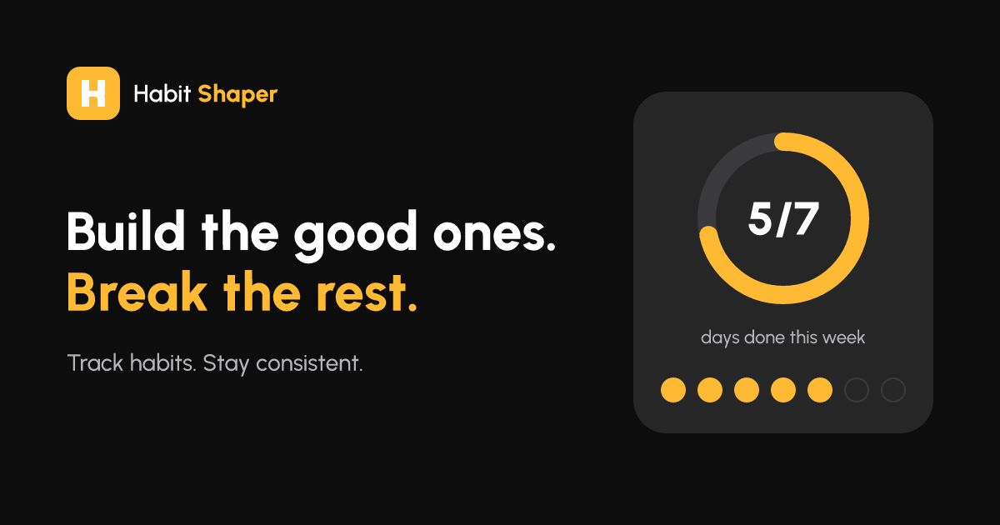

Track habits. Stay consistent.
Brand guidelines: the logo, colour, type, shape and voice of a small, calm tool that shows the one number that matters today and asks for one tap.
Drawn on a 64-unit grid with a 16-unit corner. The wordmark is Urbanist: “Habit” at 600, “Shaper” at 800. On white it is ink throughout and the tile carries the colour.
Keep a quarter of the mark's width clear on every side. The mark goes no smaller than 24px, the lockup no narrower than 120px.
Yellow marks the one action, the active state and progress. It is text only on night.
Seven hues, only behind a habit's icon. Never text, never in the logo or a headline.
WCAG 2 ratios from the token values. Body text needs 4.5:1; large text and non-text marks need 3:1.
| Sample | Foreground on background | Ratio | Use |
|---|
One family, set in sentence case. Weight does the work that a second face would do elsewhere.
Actions and single-line inputs are pills, cards 24px, tiles and multi-line fields 16px. Progress is the only illustration: a ring on night, a bar on cream, yellow day tiles.
Say what happened, then what to do. No exclamation marks, no guilt about a missed day. The full bank is voice.md.
Could not reach the server. Check your connection and try again.
Oops! Network error (ERR_503) 😢
Your clean streak starts again the next day. You can undo this.
Are you sure? This cannot be undone!
Password changed.
Awesome! Your password was successfully updated! 🎉

logo/mark and lockups, SVG, text outlinedsocial/share image, SVG and PNGapp-icon/180, 192, 512 and maskable 512, PNGREADME.mdthese rules as textvoice.mdcopy bank